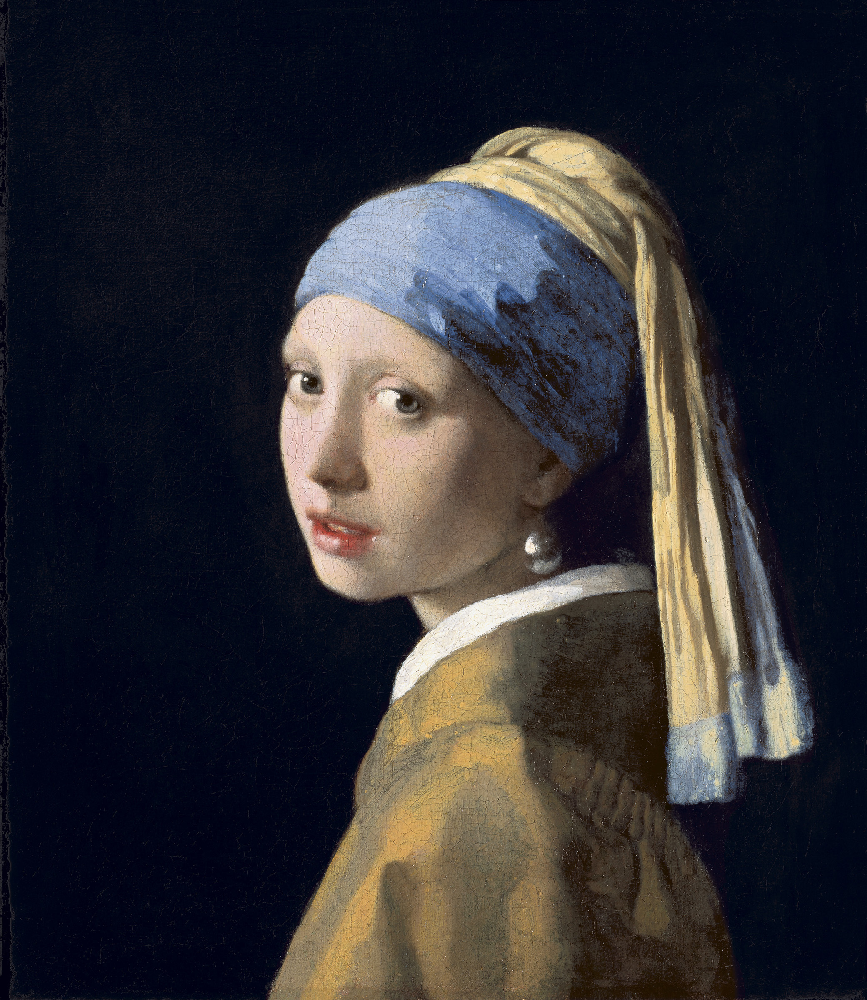

<head>
<meta charset="UTF-8" />
<meta name="keywords" content="drawing, painting" />
<meta name="description" content="drawings by Sunjy" />
<title>Sunjy</title>
<link rel="shortcut icon" type="image/x-icon" href="../../mImages/mCommon/favicon.ico" media="screen" />
<link rel="stylesheet" type="text/css" href="../../mCsses/mCommon/mCssA.css" />
<link rel="stylesheet" type="text/css" href="../../mCsses/mCommon/mCssB.css" />
<link rel="stylesheet" type="text/css" href="../../mCsses/mCommon/mCssC.css" />
<link rel="stylesheet" type="text/css" href="../../mCsses/mCommon/mCssD.css" />
<link rel="stylesheet" type="text/css" href="../../mCsses/mContent/mCssA.css" />
<link rel="stylesheet" type="text/css" href="../../mCsses/mContent/mCssB.css" />
<link rel="stylesheet" type="text/css" href="../../mCsses/mContent/mCssC.css" />
<link rel="stylesheet" type="text/css" href="../../mCsses/mContent/mCssD.css" />
</head>
<script type="text/javascript" src="../../mScripts/mContent/mContentAA.js" /></script>
<script type="text/javascript" src="../../mScripts/mContent/mContentAB.js" /></script>
<script type="text/javascript" src="../../mScripts/mContent/mContentAC.js" /></script>
<script type="text/javascript" src="../../mScripts/mContent/mContentAD.js" /></script>
<script type="text/javascript"></script> 
<script type="text/javascript">
document.write('<div class="mImgAbsolute"></div>');
/*
document.write('<p class="mFontSizeBColor" />From a white paper...</p>');
document.write('<table class="center"><tr><td>');
document.write('');
document.write('</td></tr></table>');
*/
</script>


<script type="text/javascript">
document.write('<p class="mFontSizeBColor" />Girl With a Pearl Earring</p>');
document.write('<p class="mFontSizeSColor" />By Johannes Vermeer, 1665, oil painting, often referred to as the Dutch Mona Lisa.<br>“Girl with a Pearl Earring” by Johannes Vermeer portrays a girl wearing an exotic dress, an Eastern turban, and an improbably large pearl earring. <br><br>The work is signed “IVMeer” and is one of Vermeer’s most famous paintings. However, very little is known about the background story to this picture. Also, the identity of the girl is a mystery.<br><br>Johannes Vermeer specialized in domestic interior scenes of middle-class life. Vermeer worked slowly and with great care, and often used expensive pigments.<br><br>He is particularly renowned for his excellent treatment in the use of light, and this masterpiece typifies his technique. This painting was initially titled “Girl with a Turban,” and in the second half of the twentieth century that the name changed to “Girl with a Pearl Earring.”<br><br>There has been significant speculation about the girl’s identity in this painting. Historically it was believed to be Vermeer’s eldest daughter, Maria, who was about twelve or thirteen-years-old when this painting was created.<br><br>However, there is no evidence for this proposition. The mystery about the girl’s identity inspired a historical novel entitled “Girl with a Pearl Earring” in 1999 by Tracy Chevalier.<br><br>The novel fictionalized the circumstances of the painting’s creation, which identifies the girl as a fictional servant. The book also inspired a film and a play of the same name.<br><br>Vermeer was recognized during his lifetime in Delft and The Hague, but his modest celebrity gave way to obscurity after his death.<br><br>Since the 20th century, Vermeer’s reputation has improved, and he is now acknowledged as one of the greatest painters of the Dutch Golden Age.</p>');
document.write('<table class="center" /><tr><td>');
document.write('');
document.write('</td></tr></table>');
</script>


